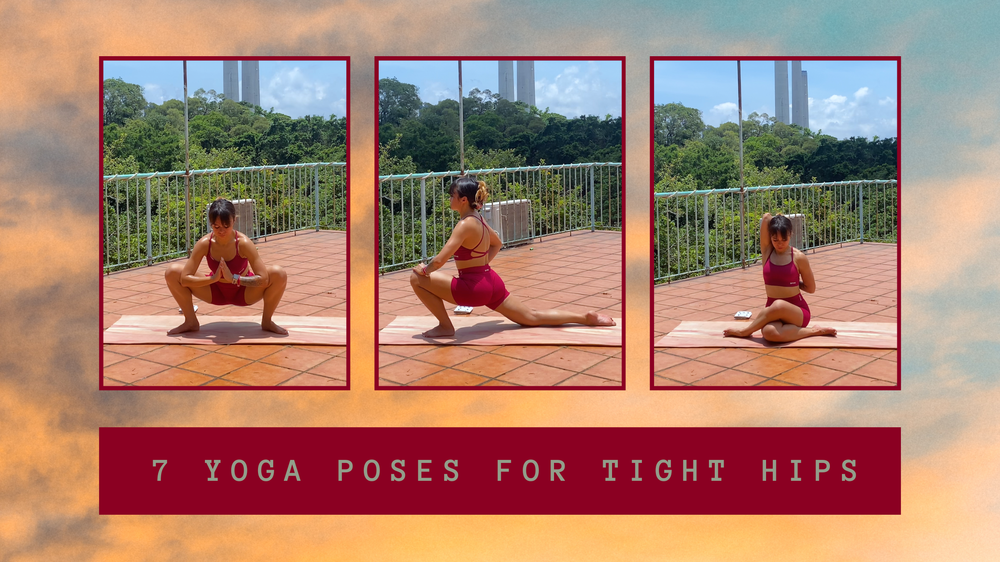

7 Yoga poses to open tight hips
A 9 min Hatha-inspired Yoga flow to open up tight hips.

Tight hips are one of the causes of lower back strain and anterior pelvic tight. It can limit the range of motion for your lower body, and can even be one of the main causes of knee pain and upper back tension.
Yoga is great for opening tight hips. When carrying out certain poses, your hip joints are using their full range of motion (extension, flexion, adduction, abduction, and external rotation).
By holding the poses, you’re lengthening the muscles and connective tissue with each deep breath you take. Doing so counteracts the shortening of the hip flexors and weakening of glutes experienced when sitting down for too long.
Releasing tight hips can help encourage your pelvis back into neutral alignment and allows your glutes to activate effectively when needed.
Here are 7 pose Yoga Flow, inspired by Hatha poses:
- Easy Pose
- Butterfly Pose
- Garland Pose
- Low Lunge
- Pigeon Pose
- Cow Face Pose
- Happy Baby
Easy Pose (Sukhasana)
Starting with Easy Pose is a great way to practice diaphragmatic breathing (deep, belly breathing) and assess your hip asymmetry (which side is tighter?).
- Externally rotates the hips
- Stretches the outer glutes
Butterfly Pose (Baddha Konasana)
This pose lengthens your inner thighs and groin area. Stretching these muscles can improve your range of motion, which is important for balancing and joint mobility.
- Loosens the inner thighs (adductors) and groin
- Improves range of motion
Garland Pose (Malasana)
The deep squat in this movement ensures you’re fully flexing your hips and stretching your adductors.
- Focuses on mobility for ankles, knees, hips, and lower back
- Improves squat depth
Low Lunge (Anjaneyasana)
This pose stretches the back of your legs and hip flexors, which can be tight from sitting all day.
- Reduces anterior pelvic tilt
- Prepares glutes for movements that require them to contract
Pigeon Pose (Kapotasana)
This pose deeply externally rotates the front hip while stretching the glutes, and tdeep rotators of the back hip.
- Improves ROM of hips
- Eases tight hip flexors
Cow Face Pose (Gomukhasana)
This pose creates a deep external rotation and adduction stretch.
- Improves pelvic stability
- Can help balance hip rotation (release tightness in one side)
Happy Baby (Ananda Balasana)
This is a great pose to end the flow as a cool-down. As you flex your knees towards the armpits, you gently stretch the inner thigh and lower back, whilst externally rotating the hips.
- Releases tensions from the lumbar spine and lower back
- Opens tight hips flexors